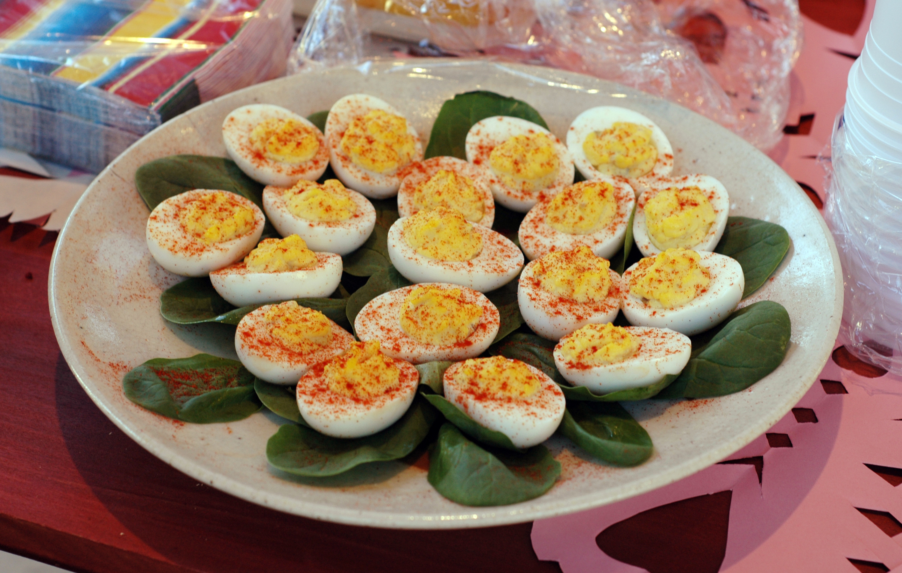

HOME!
Deviled Eggs

Description
Deviled eggs - creamy, tangy, delightful little treats packed with flavor and happiness.
Why wait until Easter or Thanksgiving? This easy recipe will have you making deviled eggs all year round.
If you like a SOUR deviled egg, follow the recipe as-is. If you prefer a milder flavor, cut the vinegar and dijon in half at first and add more to taste.
Ingredients
- 6 cooled and peeled hard boiled eggs
- 2 Tbsp mayonnaise
- 1 Tbsp white vinegar
- 1 Tbsp dijon mustard
- salt and pepper to taste
- dash paprika
- (optional) capers or parsley
Steps
- Slice the eggs in half lengthwise.
- Separate the yolks from the whites into a separate bowl.
- Break apart the yolks with a fork into small pieces.
- Add the mayonnaise, vinegar, and dijon mustard to the yolks.
- Mash and stir the yolk mixture together. The more you stir, the creamier your filling will be.
- Add salt and pepper to taste.
- Taste test. Add more of any ingredient based on your preference.
- Arrange whites onto serving dish.
- Add filling to piping bag or sandwich bag with corner cut off. Fill each white evenly. Squeeze excess directly into mouth to avoid over-filling whites.
- Sprinkle paprika over the top of all the eggs.
- Add optional toppings like capers (delicious) or parsley (pretty, but worthless).
- Consume.
Refrigerate any leftovers for up to two days... but let's be real, will you really have leftovers?